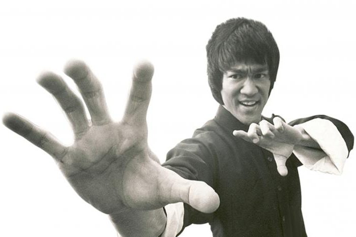

"Я не боюсь того, хто вивчає 10,000 різних ударів.
Я боюсь того, хто вивчає один удар 10,000 раз.
— Брюс Лі (популяризатор і реформатор в області китайских бойових мистецтв, режисер, актор)
ПРАВИЛА спортивних змагань з Шотокан карате-до С.К.І.Ф.
| ЗАТВЕРДЖЕНО Наказ Міністерства молоді та спорту України 20.01.2014 № 94 | Зареєстровано в Міністерстві юстиції України 5 лютого 2014 р. за № 229/25006 |